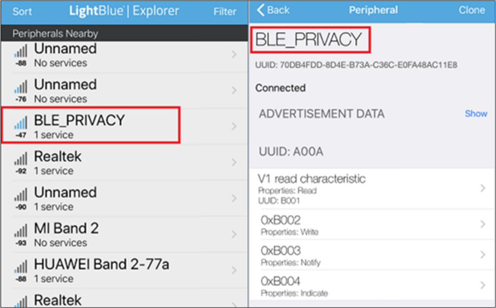
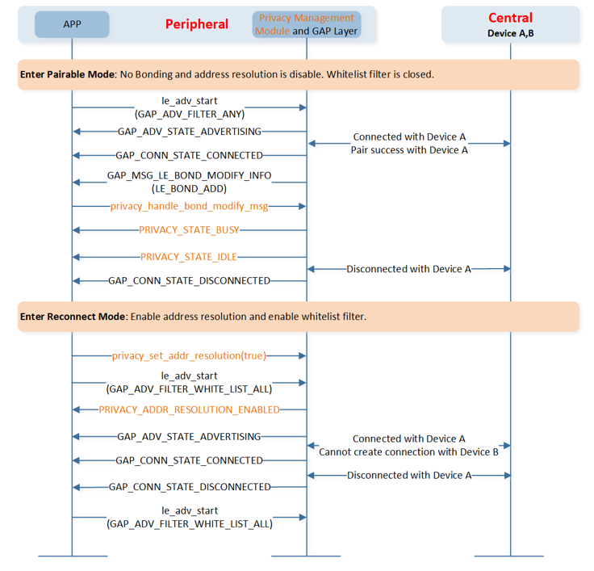

LE Peripheral Privacy
ble_peripheral_privacy sample is an example of the usage of the Privacy Management Module. The ble_peripheral_privacy project implements a Privacy Management Module sample based on the ble_peripheral project.
More information about LE Peripheral role can be found in LE Peripheral.
More information about the Privacy Management Module can be found in Privacy Management Module of Code Overview.
Requirements
The sample supports the following development kits:
Hardware Platforms |
Board Name |
|---|---|
RTL87x2G HDK |
RTL87x2G EVB |
To quickly set up the development environment, please refer to the detailed instructions provided in Quick Start.
Wiring
Please refer to EVB Interfaces and Modules in Quick Start.
The sample requires support for user command interface. For specific wiring instructions, please refer to Data UART Connection in User Command Interface.
Configurations
Configurable Items
All contents that can be configured for the sample are in
samples\bluetooth\ble_peripheral_privacy\src\app_flags.h,
developers can configure according to actual needs.
/** @brief Configure APP LE link number */
#define APP_MAX_LINKS 1
/** @brief User command: 0-Close user command, 1-Open user command */
#define USER_CMD_EN 1
/** @brief Configure Privacy1.2 feature: 0-Closed, 1-Open */
#define APP_PRIVACY_EN 1
#if APP_PRIVACY_EN
/** @brief Configure the authentication requirement of simple_ble_service.c */
#define SIMP_SRV_AUTHEN_EN 1
#endif
- Privacy Configuration
All privacy related code is separated by macro definition
APP_PRIVACY_EN.- Security Requirement of Service
All service security related code is separated by macro definition
SIMP_SRV_AUTHEN_EN. If the application wants to use privacy, the application needs to enable security. More information can be found in Security Requirement of Service in Code Overview.
Generating System Config File
Developers shall configure the following items through MP Tool:
Configurable Item |
Value |
|---|---|
LE Slave Link Num |
≥ APP_MAX_LINKS |
For more information about MP Tool Configuration, please refer to Generating System Config File in Quick Start.
Building and Downloading
This sample can be found in the SDK folder:
Project file: samples\bluetooth\ble_peripheral_privacy\proj\rtl87x2g\mdk
Project file: samples\bluetooth\ble_peripheral_privacy\proj\rtl87x2g\gcc
To build and run the sample, follow the steps listed below:
Open project file.
To build the target, follow the steps listed on the Generating App Image in Quick Start.
After a successful compilation, the APP bin
app_MP_sdk_xxx.binwill be generated in the directorysamples\bluetooth\ble_peripheral_privacy\proj\rtl87x2g\mdk\bin.To download APP bin into EVB, follow the steps listed on the MP Tool Download in Quick Start.
Press the reset button on the EVB and it will start running.
Experimental Verification
After downloading the sample bin to the EVB, developers can test with a phone installed LE APPs like LightBlue.
Preparing Kit
Prepare one development board named DUT, and use Debug Analyzer tool to Log Verification .
Preparation Phase
Use MP Tool to set DUT address to [00:11:22:33:44:80], and then build the ble_peripheral_privacy sample, and download images into DUT. Developers can enter the user command in serial port assistant tool in PC. Please refer to How to Use Commands in User Command Interface.
For details about how to change the Bluetooth Address, please refer to Generating System Config File in Quick Start.
Testing Phase
Press the
resetbutton on DUT and developers can enter the user command in serial port assistant tool in PC.Run
LightBlueon iOS device to search for and connect with DUT, as shown below:
ble_peripheral_privacy Test with iOS Device
Developers can implement actions like scanning, connecting, pairing, discovering services, deleting bond information, disconnecting, etc., on the phone-end.
{kind=link}
DUT can terminate the connection and clear bonding message using user commands below:
DUT User Command
Description
DUT Log
disc 0
DUT terminates the connection.
Serial port assistant tool shows:
Disconnect conn_id 0
bondclear
Clear the bonding information on DUT-end.
Debug Analyzer shows:
[GAP] !**le_clear_all_keys
Code Overview
This chapter will be introduced according to the following several parts:
The directories of the project and source code files will be introduced in chapter Source Code Directory.
The Bluetooth Host will be introduced in chapter Bluetooth Host Overview.
The main function and configurable GAP parameters of this sample will be introduced in chapter Initialization.
The privacy management module will be introduced in chapter Privacy Management Module.
The flow of Privacy will be introduced in chapter Privacy Usage Flow.
The security requirement of service will be introduced in chapter Security Requirement of Service.
Source Code Directory
Project directory:
samples\bluetooth\ble_peripheral_privacy\proj.Source code directory:
samples\bluetooth\ble_peripheral_privacy\src.
Source files in the ble_peripheral_privacy sample project are currently categorized into several groups as below.
└── Project: peripheral_privacy
└── secure_only_app
└── Device includes startup code
├── CMSE Library Non-secure callable library
├── Lib includes all binary symbol files that user application is built on
├── ROM_NS.lib
└── lowerstack.lib
└── rtl87x2g_sdk.lib
└── gap_utils.lib
├── peripheral includes all peripheral drivers and module code used by the application
├── Profile includes LE profiles or services used by the sample application
└── APP includes the ble_peripheral_privacy user application implementation
├── app_task.c
├── main.c
├── peripheral_privacy_app.c
├── user_cmd.c
├── privacy_mgnt.c
├── data_uart.c
└── user_cmd_parse.c
The sample uses the default GAP LIB that matches with bt_host_0_0, please refer to Usage of GAP LIB in
Host Image
for more information.
Bluetooth Host Overview
The sample uses the default Bluetooth Host image in bt_host_0_0, please refer to
Host Image
for more information.
For the details of Bluetooth technology features supported by the Bluetooth Host, please refer to the file
bin\rtl87x2g\bt_host_image\bt_host_0_0\bt_host_config.h.
Initialization
main() function is invoked when the EVB is powered on and the chip is reset,
and it performs the following initialization functions:
int main(void)
{
board_init();
le_gap_init(APP_MAX_LINKS);
gap_lib_init();
app_le_gap_init();
app_le_profile_init();
pwr_mgr_init();
task_init();
os_sched_start();
return 0;
}
le_gap_init()function is used to initialize GAP and configure link number.app_le_profile_init()function is used to initialize Profile.app_le_gap_init()function is used to initialize the GAP parameters, developers can configure the following parameters: Device name and device appearance, GAP Advertising Parameters, GAP Bond Manager parameters(Please refer to the chapter Configure Device Name and Device Appearance, Configure Advertising Parameters, Configure Bond Manager Parameters, Configure Other Parameters of LE Host).
void app_le_gap_init(void)
{
/* Device name and device appearance */
......
/* Advertising parameters */
......
/* GAP Bond Manager parameters */
......
/* Set device name and device appearance */
le_set_gap_param(GAP_PARAM_DEVICE_NAME, GAP_DEVICE_NAME_LEN, device_name);
le_set_gap_param(GAP_PARAM_APPEARANCE, sizeof(appearance), &appearance);
le_set_gap_param(GAP_PARAM_SLAVE_INIT_GATT_MTU_REQ, sizeof(slave_init_mtu_req),
&slave_init_mtu_req);
/* Set advertising parameters */
le_adv_set_param(GAP_PARAM_ADV_EVENT_TYPE, sizeof(adv_evt_type), &adv_evt_type);
le_adv_set_param(GAP_PARAM_ADV_DIRECT_ADDR_TYPE, sizeof(adv_direct_type), &adv_direct_type);
le_adv_set_param(GAP_PARAM_ADV_DIRECT_ADDR, sizeof(adv_direct_addr), adv_direct_addr);
le_adv_set_param(GAP_PARAM_ADV_CHANNEL_MAP, sizeof(adv_chann_map), &adv_chann_map);
le_adv_set_param(GAP_PARAM_ADV_FILTER_POLICY, sizeof(adv_filter_policy), &adv_filter_policy);
le_adv_set_param(GAP_PARAM_ADV_INTERVAL_MIN, sizeof(adv_int_min), &adv_int_min);
le_adv_set_param(GAP_PARAM_ADV_INTERVAL_MAX, sizeof(adv_int_max), &adv_int_max);
le_adv_set_param(GAP_PARAM_ADV_DATA, sizeof(adv_data), (void *)adv_data);
le_adv_set_param(GAP_PARAM_SCAN_RSP_DATA, sizeof(scan_rsp_data), (void *)scan_rsp_data);
/* Setup the GAP Bond Manager */
gap_set_param(GAP_PARAM_BOND_PAIRING_MODE, sizeof(auth_pair_mode), &auth_pair_mode);
gap_set_param(GAP_PARAM_BOND_AUTHEN_REQUIREMENTS_FLAGS, sizeof(auth_flags), &auth_flags);
gap_set_param(GAP_PARAM_BOND_IO_CAPABILITIES, sizeof(auth_io_cap), &auth_io_cap);
gap_set_param(GAP_PARAM_BOND_OOB_ENABLED, sizeof(auth_oob), &auth_oob);
le_bond_set_param(GAP_PARAM_BOND_FIXED_PASSKEY, sizeof(auth_fix_passkey), &auth_fix_passkey);
le_bond_set_param(GAP_PARAM_BOND_FIXED_PASSKEY_ENABLE, sizeof(auth_use_fix_passkey),
&auth_use_fix_passkey);
le_bond_set_param(GAP_PARAM_BOND_SEC_REQ_REQUIREMENT, sizeof(auth_sec_req_flags),
&auth_sec_req_flags);
/* register gap message callback */
le_register_app_cb(app_gap_callback);
#if APP_PRIVACY_EN
privacy_init(app_privacy_callback, true);
#endif
}
More information on LE GAP initialization and startup flow can be found in the chapter GAP Parameters Initialization of LE Host.
Privacy Management Module
Development of Privacy Management Module is based on the header file gap_privacy.h.
If developers need to use the Privacy Management Module, the header file privacy_mgnt.h can be used to develop privacy-related applications.
For RTL87x2G, the directory of the Privacy Management Module files is as follows.
Source code:
samples\bluetooth\ble_peripheral_privacy\src\privacy_mgnt.cHeader file:
samples\bluetooth\ble_peripheral_privacy\src\privacy_mgnt.h
Developers need to add the privacy_mgnt.c file to the app group of the project and add the header file directory to the Include Paths.
Interfaces
Interfaces of the Privacy Management Module are defined in header file privacy_mgnt.h.
/* privacy_mgnt.h APIs */
typedef void(*P_FUN_PRIVACY_STATE_CB)(T_PRIVACY_CB_TYPE type, T_PRIVACY_CB_DATA cb_data);
void privacy_init(P_FUN_PRIVACY_STATE_CB p_fun, bool whitelist);
T_PRIVACY_STATE privacy_handle_resolv_list(void);
void privacy_handle_bond_modify_msg(T_LE_BOND_MODIFY_TYPE type, T_LE_KEY_ENTRY *p_entry,
bool handle_add);
bool privacy_add_device(T_LE_KEY_ENTRY *p_entry);
T_GAP_CAUSE privacy_set_addr_resolution(bool enable);
T_GAP_CAUSE privacy_read_peer_resolv_addr(T_GAP_REMOTE_ADDR_TYPE peer_address_type,
uint8_t *peer_address);
T_GAP_CAUSE privacy_read_local_resolv_addr(T_GAP_REMOTE_ADDR_TYPE peer_address_type,
uint8_t *peer_address);
Usage of Privacy Management Module
Initialization of Privacy Management Module
To initialize the Privacy Management Module and register the callback function, the APP needs to call privacy_init().
void app_le_gap_init(void)
{
/* register gap message callback */
le_register_app_cb(app_gap_callback);
#if APP_PRIVACY_EN
privacy_init(app_privacy_callback, true);
#endif
}
The whitelist parameter in privacy_init() is used to configure the management of the white list.
When set to true, the Privacy Management Module will handle the management of the white list when modifying the resolving list.
However, if set to false, the sample will be responsible for managing the white list.
The callback function is used to handle messages sent by the Privacy Management Module.
void app_privacy_callback(T_PRIVACY_CB_TYPE type, T_PRIVACY_CB_DATA cb_data)
{
APP_PRINT_INFO1("app_privacy_callback: type %d", type);
switch (type)
{
case PRIVACY_STATE_MSGTYPE:
app_privacy_state = cb_data.privacy_state;
APP_PRINT_INFO1("PRIVACY_STATE_MSGTYPE: status %d", app_privacy_state);
break;
case PRIVACY_RESOLUTION_STATUS_MSGTYPE:
app_privacy_resolution_state = cb_data.resolution_state;
APP_PRINT_INFO1("PRIVACY_RESOLUTION_STATUS_MSGTYPE: status %d", app_privacy_resolution_state);
break;
default:
break;
}
}
Resolving List Management
The key function of the Privacy Management Module is to manage the resolving list and white list when there are changes to the bonding information. The management of the white list is an optional feature. The whitelist parameter in privacy_init() is used to configure the management of the white list.
The sample should call the function privacy_handle_bond_modify_msg() when handling the message GAP_MSG_LE_BOND_MODIFY_INFO.
The Privacy Management Module will handle the resolving list based on the type of modification in the bonding information, and the process is as follows.
LE_BOND_DELETE: Delete the device from the resolving list.
LE_BOND_ADD: Add the device to the resolving list.
LE_BOND_CLEAR: Clear the resolving list.
T_APP_RESULT app_gap_callback(uint8_t cb_type, void *p_cb_data)
{
T_APP_RESULT result = APP_RESULT_SUCCESS;
T_LE_CB_DATA *p_data = (T_LE_CB_DATA *)p_cb_data;
switch (cb_type)
{
#if APP_PRIVACY_EN
case GAP_MSG_LE_BOND_MODIFY_INFO:
APP_PRINT_INFO1("GAP_MSG_LE_BOND_MODIFY_INFO: type 0x%x",
p_data->p_le_bond_modify_info->type);
privacy_handle_bond_modify_msg(p_data->p_le_bond_modify_info->type,
p_data->p_le_bond_modify_info->p_entry, true);
break;
#endif
......
}
Modification procedure of resolving list cannot be executed in the following scenes when address resolution is enabled.
Advertising is enabled.
Scanning is enabled.
Create connection command is outstanding.
Modification procedure of resolving list can be executed at any time when the address resolution is disabled.
The sample shall call the function privacy_handle_resolv_list() when the GAP device state is idle. This function handles the pending modification procedures of the resolving list.
void app_handle_dev_state_evt(T_GAP_DEV_STATE new_state, uint16_t cause)
{
APP_PRINT_INFO3("app_handle_dev_state_evt: init state %d, adv state %d, cause 0x%x",
new_state.gap_init_state, new_state.gap_adv_state, cause);
#if APP_PRIVACY_EN
if ((new_state.gap_init_state == GAP_INIT_STATE_STACK_READY)
&& (new_state.gap_adv_state == GAP_ADV_STATE_IDLE)
&& (new_state.gap_conn_state == GAP_CONN_DEV_STATE_IDLE))
{
privacy_handle_resolv_list();
}
#endif
......
}
The callback type PRIVACY_STATE_MSGTYPE is used to inform the state of the resolving list modification procedure. The callback data is T_PRIVACY_STATE.
typedef enum
{
PRIVACY_STATE_INIT, //!< Privacy management module is not initialization.
PRIVACY_STATE_IDLE, //!< Idle. No pending resolving list modification procedure.
PRIVACY_STATE_BUSY //!< Busy. Resolving list modification procedure is not completed.
} T_PRIVACY_STATE;
Address Resolution
If the peer device uses the resolvable private address, and the sample wants to use the white list to filter this peer device, then the sample needs to call the function privacy_set_addr_resolution() to enable the address resolution.
If the sample wants to pair with new devices, the sample needs to call the function privacy_set_addr_resolution() to disable the address resolution. When the address resolution is enabled, the local device cannot connect with a device that is not in the resolving list. The sample code is shown as follows:
void app_adv_start(void)
{
uint8_t adv_evt_type = GAP_ADTYPE_ADV_IND;
uint8_t adv_filter_policy = GAP_ADV_FILTER_ANY;
#if APP_PRIVACY_EN
T_LE_KEY_ENTRY *p_entry;
p_entry = le_get_high_priority_bond();
if (p_entry == NULL)
{
/* No bonded device, send connectable undirected advertising event without using whitelist*/
app_work_mode = APP_PAIRABLE_MODE;
adv_filter_policy = GAP_ADV_FILTER_ANY;
if (app_privacy_resolution_state == PRIVACY_ADDR_RESOLUTION_ENABLED)
{
privacy_set_addr_resolution(false);
}
}
else
{
app_work_mode = APP_RECONNECTION_MODE;
adv_filter_policy = GAP_ADV_FILTER_WHITE_LIST_ALL;
if (app_privacy_resolution_state == PRIVACY_ADDR_RESOLUTION_DISABLED)
{
privacy_set_addr_resolution(true);
}
}
#endif
le_adv_set_param(GAP_PARAM_ADV_EVENT_TYPE, sizeof(adv_evt_type), &adv_evt_type);
le_adv_set_param(GAP_PARAM_ADV_FILTER_POLICY, sizeof(adv_filter_policy), &adv_filter_policy);
le_adv_start();
}
The function privacy_set_addr_resolution() is used to enable the resolution of Resolvable Private Addresses in the Controller. This allows the Controller to use the resolving list whenever it receives a local or peer Resolvable Private Address.
This function can be used at any time except when:
Advertising is enabled.
Scanning is enabled.
A create connection command is outstanding.
The callback type PRIVACY_RESOLUTION_STATUS_MSGTYPE is used to inform the state of address resolution. The callback data is T_PRIVACY_ADDR_RESOLUTION_STATE.
/** @brief Define the privacy address resolution state */
typedef enum
{
PRIVACY_ADDR_RESOLUTION_DISABLED,
PRIVACY_ADDR_RESOLUTION_DISABLING,
PRIVACY_ADDR_RESOLUTION_ENABLING,
PRIVACY_ADDR_RESOLUTION_ENABLED
} T_PRIVACY_ADDR_RESOLUTION_STATE;
Privacy Usage Flow
There are two modes in the sample. The device in pairable mode can be connected with any device. The device in pairable mode shall disable address resolution and disable white list filter policy.
The device in the reconnect mode can only be connected with devices which are in the resolving list and white list. If the sample wants to filter a device that uses the resolvable private address, the sample will call the function privacy_set_addr_resolution() to enable address resolution.
The flow chart of ble_peripheral_privacy sample is shown below.

Peripheral Privacy APP Flow
Security Requirement of Service
All service security-related code is separated by macro definition SIMP_SRV_AUTHEN_EN.
If developers want to use privacy, they need to enable security.
More information can be found in the chapter Security Requirement of Service of LE Host.
/* client characteristic configuration */
{
ATTRIB_FLAG_VALUE_INCL | ATTRIB_FLAG_CCCD_APPL, /* flags */
{ /* type_value */
LO_WORD(GATT_UUID_CHAR_CLIENT_CONFIG),
HI_WORD(GATT_UUID_CHAR_CLIENT_CONFIG),
/* NOTE: this value has an instantiation for each client, a write to */
/* this attribute does not modify this default value: */
LO_WORD(GATT_CLIENT_CHAR_CONFIG_DEFAULT), /* client char. config. bit field */
HI_WORD(GATT_CLIENT_CHAR_CONFIG_DEFAULT)
},
2, /* bValueLen */
NULL,
#if SIMP_SRV_AUTHEN_EN
(GATT_PERM_READ_AUTHEN_REQ | GATT_PERM_WRITE_AUTHEN_REQ) /* permissions */
#else
(GATT_PERM_READ | GATT_PERM_WRITE) /* permissions */
#endif
},
See Also
Please refer to the relevant API Reference: